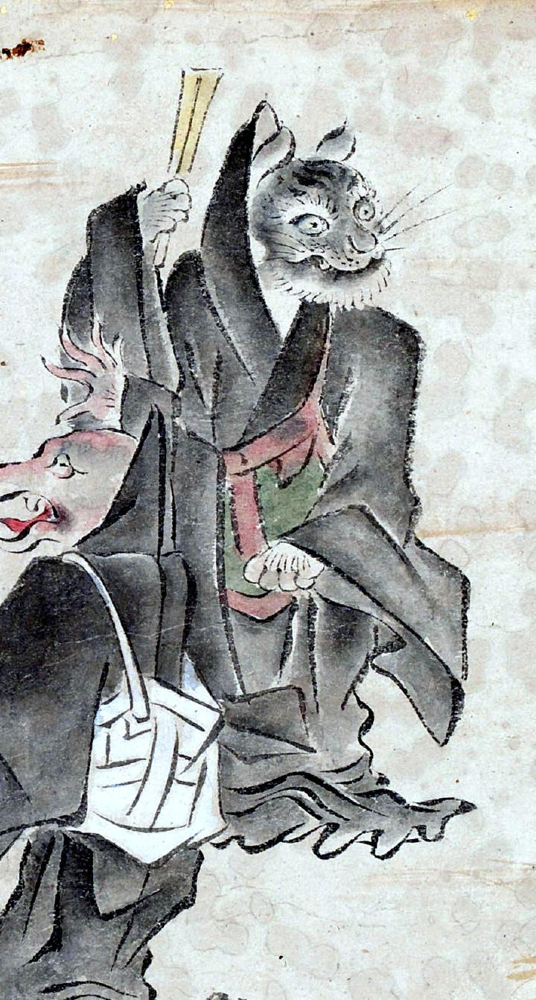

猫あるいは虎のような顔をした化物。毛色は白黒のまだらで、口元から長いひげが伸びている。黒い僧衣に赤い袈裟を身にまとい、右手には折り畳んだ扇を持っている。
著作者：吉光／出典：親書誌：U426_nichibunken_0057：百鬼ノ図；ヒャッキノズ／日付：2006／資源識別子：U426_nichibunken_0057_0005_0004
Copyright (c)2010- International Research Center for Japanese Studies, Kyoto, Japan. All rights reserved.